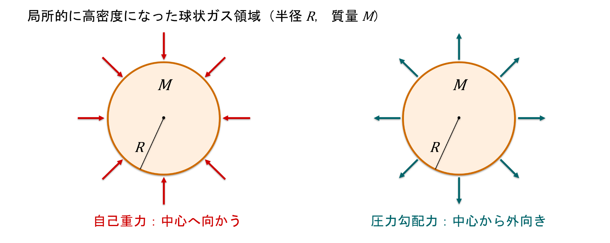

はじめに
星間ガスの一部が周囲より高密度になると，自己重力はガスを引き寄せ，圧力は密度のむらを押し広げる．この二つの作用の競争によって，ガス塊が重力収縮を始めるかどうかが決まる．臨界的な長さと質量の目安を与えるのがジーンズ半径とジーンズ質量である．本稿では，ガスの状態方程式から重力不安定の条件を導き，密度ゆらぎの線形解析を確認し，収縮に伴うガス雲の分裂までを一つながりに説明する．
星間ガスから星が形成されるまで
星間ガスの典型的な密度はおよそ \[\rho_{\rm ISM}\sim 10^{-23}\,\mathrm{g\,cm^{-3}},\] 一方，太陽の平均密度はおよそ \[\rho_\odot \sim 1\,\mathrm{g\,cm^{-3}}\] である．したがって，星間ガスから恒星を作るには，概略として \[\frac{\rho_\odot}{\rho_{\rm ISM}}\sim 10^{23}\] という途方もない密度上昇が必要になる．この密度上昇の出発点となる機構が，重力不安定である．
この過程の物理的な見通しは，次のように整理できる．
星間ガスの一部，半径 \(R\)，質量 \(M\) の領域を考える．
内向きの自己重力と，外向きの圧力勾配力を比較する．圧力勾配とは，場所によって圧力が変わることであり，その圧力差がガスを動かす力を生む．
理想気体の状態方程式は，気体の圧力 \(P\)，密度 \(\rho\)，温度 \(T\) を結ぶ関係式である．この関係を使い，圧力勾配力の見積もりに現れる \(P/\rho\) を温度や音速 \(c_s\) で表す．ここで \(c_s\) は，ガス中を小さな密度変化が伝わる速さ（以下では等温音速）である．
収縮が始まる臨界スケールとして，ジーンズ半径 \(R_J\) とジーンズ質量 \(M_J\) を導く．
先ほどの力の比較は「およその大きさ」を見積もっただけであり，数値係数や「いつ乱れが成長するか」は確定しない．そこで線形解析を導入し，弱い密度のむらが実際に増幅するかどうかを判定する．詳しい計算法よりも，概算をより明確な判定基準にするための方法と理解すればよい．
星形成では，初期の等温収縮では分裂が進み，後の断熱収縮では分裂が止まりやすくなることを理解する．
球状のガス領域というモデル
周囲に比べて局所的に高密度となった，半径 \(R\)，質量 \(M\) の球状ガス領域を考える．領域内の密度 \(\rho\) と温度 \(T\) を代表値で近似する．圧力勾配力はこの領域と周囲との圧力の差から生じる．

この球の質量は，密度が一様なら
である．この式は後で，\(M\) を \(R\) と \(\rho\) で書き換えるために使う．
理想気体の状態方程式と平均分子量
圧力と密度・温度を結ぶ状態方程式は
である．これは星間ガスの圧力 \(P\) を，質量密度 \(\rho\) と温度 \(T\) で表した理想気体の状態方程式である．
記号の定義
\(P\)：圧力（単位面積に働く力；単位は \(\mathrm{Pa}\) または \(\mathrm{dyn\,cm^{-2}}\)）．圧力そのものと，場所による圧力の差が生む正味の力は区別する（詳しくは第4節）．
\(\rho\)：ガスの質量密度．
\(T\)：絶対温度．
\(\bar{\mu}\)：平均分子量（無次元）．ガスを構成する自由粒子1個あたりの平均質量 \(\langle m\rangle\) を，水素原子質量 \(m_{\rm H}\) を単位として表した量で， \[\bar{\mu}\equiv \frac{\langle m\rangle}{m_{\rm H}}, \qquad \langle m\rangle=\bar{\mu}m_{\rm H}\] と定義する．「平均分子量」という慣用名だが，分子だけの質量の平均とは限らない．ここでいう粒子とは，気体中で独立に熱運動し圧力に寄与する単位で，水素分子 \(\mathrm{H_2}\)，原子 \(\mathrm{H}\)，ヘリウム原子，イオン，電子などを含む．たとえば純粋な中性水素原子ガスなら \(\bar{\mu}\simeq1\)，純粋な \(\mathrm{H_2}\) ガスなら \(\bar{\mu}\simeq2\) となる．実際の分子雲ではヘリウムも含むため，およそ \(\bar{\mu}\simeq2.3\) を使うことが多い．
\({\mathcal{R}_g}\)：水素原子質量を基準にした比気体定数で， \[{\mathcal{R}_g}\equiv\frac{k_{\rm B}}{m_{\rm H}}\] と定義する．\(k_{\rm B}\) はボルツマン定数，\(m_{\rm H}\) は水素原子の質量である．\(k_{\rm B}\) は「粒子1個あたり」の圧力と温度の換算係数（単位 \(\mathrm{J\,K^{-1}}\)），それを \(m_{\rm H}\) で割った \({\mathcal{R}_g}\) は「水素原子1個分の質量あたり」に換算した係数である．単位はSI単位系なら \(\mathrm{J\,kg^{-1}\,K^{-1}}\)，cgs単位系なら \(\mathrm{erg\,g^{-1}\,K^{-1}}\)．数値もそれぞれの単位系で変わる．水素だけでできた気体のみに使えるという意味ではない．実際の混合ガスでは \({\mathcal{R}_g}/\bar\mu\) を使う．普遍気体定数 \(R_{\rm u}\) との違いは下で定義する．
平均分子量 \(\bar\mu\) の具体的な計算を確認する．混合気体を構成する粒子の種類を \(i\) とし，種類 \(i\) の粒子1個の質量を \(m_i\)，個数を \(N_i\) と書く．すると， \[\begin{aligned} \text{全粒子の合計質量}\;&=\sum_i N_i m_i,\\ \text{全粒子数}\;&=\sum_i N_i,\\ \text{粒子1個の平均質量}\quad \langle m\rangle&=\frac{\sum_i N_i m_i}{\sum_i N_i},\\ \text{平均分子量}\quad\bar\mu&=\frac{\langle m\rangle}{m_{\rm H}} =\frac{\sum_i N_i m_i}{m_{\rm H}\sum_i N_i}. \end{aligned}\] ここで求めたいのは「一粒子あたりの平均質量」であるため，全粒子の質量の合計を全粒子数で割る．たとえば，質量 \(m_A\) の粒子が2個と質量 \(m_B\) の粒子が1個なら，3個の粒子の平均質量は \((2m_A+m_B)/3\) となる．\(\bar\mu\) はこの平均質量を水素原子の質量で割った無次元の比である．
混合ガスの状態方程式で使う比気体定数は \({\mathcal{R}_g}/\bar\mu=k_{\rm B}/\langle m\rangle\) となる．粒子1個あたりの係数 \(k_{\rm B}\) を，粒子1個あたりの平均質量 \(\langle m\rangle\) で割るので，単位質量あたりの比例係数へ変わる．混合比や電離度が変われば \(\bar\mu\) も変わる．
気体分子運動論から状態方程式へ
この式は，大学初年級の熱力学・統計力学で扱う理想気体の状態方程式と同じ内容である．理想気体とは，粒子の大きさと粒子間相互作用を，気体の圧力を考える際に無視できるほど希薄な気体のモデルである．
まず，粒子の総数を \(N\)，体積を \(V\) とすると，理想気体では
が成り立つ．ここで \(N\) は「分子数」と呼んでもよい場合があるが，それは気体が分子だけからなるときに限られる．たとえば純粋な \(\mathrm{H_2}\) ガスなら \(N\) は分子数，一方，中性水素原子ガスなら原子数である．混合・電離ガスでは，\(N\) はすべての独立した自由粒子の個数の合計であり，イオンと電子をそれぞれ数える．
運動論から \(PV=Nk_{\rm B}T\) を確かめる
ここでは熱平衡にある非相対論的・古典的な理想気体を最初から仮定する．まず粒子が壁との間を自由飛行して壁に弾性衝突する理想化を考え，速度分布は特定の方向に偏らないものとする．壁にぶつかる粒子の運動量変化から圧力を求め，最後に温度を導入する． 並進運動は，粒子の重心が空間の \(x,y,z\) 方向に移動する運動である（分子の回転や振動とは区別する）．まず容器の壁への衝突だけから圧力を求める．辺の長さ \(L\) の立方体の中を，質量 \(m\) の粒子が弾性衝突しながら運動すると考える．
\(x\) に垂直な壁への1回の衝突で，粒子の \(x\) 方向の運動量は \(mv_x\) から \(-mv_x\) に変わる．壁が受け取る運動量の大きさは \(2m|v_x|\)．同じ壁へ次に戻るまでの時間は \(2L/|v_x|\) だから，単位時間あたりの運動量（＝平均の力）は \[F_x=\frac{2m|v_x|}{2L/|v_x|}=\frac{mv_x^2}{L}.\] この値を \(N\) 個の粒子について足す．圧力は壁が受ける全力を面積で割ったものであるから， \[\begin{aligned} P &= \frac{F_{\text{全}}}{A} =\frac{1}{L^2}\sum_{j=1}^{N}\frac{m v_{x,j}^2}{L}\\ &=\frac{m}{L^3}\sum_{j=1}^{N}v_{x,j}^2 =\frac{Nm}{L^3}\left(\frac{1}{N}\sum_{j=1}^N v_{x,j}^2\right)\\ &=\frac{Nm}{V}\langle v_x^2\rangle, \end{aligned}\] ここで \(V=L^3\)，\(\langle v_x^2\rangle\equiv N^{-1}\sum_j v_{x,j}^2\) である．速度の二乗には \[v^2=v_x^2+v_y^2+v_z^2\] が成り立つ．気体に特定の運動方向がないなら各方向の平均は同じなので， \[\langle v_x^2\rangle=\langle v_y^2\rangle=\langle v_z^2\rangle, \quad \langle v^2\rangle=3\langle v_x^2\rangle.\] したがって，
この式は質量・速度・粒子数から圧力を求める式であり，まだ温度は登場していない．\(\langle\ \rangle\) は粒子全体の平均を表す．壁が受ける力を面積で割るから「圧力」になるのである．
次に，この古典理想気体を熱平衡状態に置いて温度と運動エネルギーを結ぶ．熱平衡とは，粒子間の衝突・エネルギー交換が進み，温度や速度分布などの巨視的な量が時間的に変わらなくなった状態である．「古典的」とは量子統計の効果を無視できる条件をいう（単に光速より遅いという意味ではない）．
エネルギー等分配則は，非相対論的な古典気体の熱平衡で，エネルギーが二乗の形をとる独立な運動成分には平均 \(k_{\rm B}T/2\) ずつが割り当てられるという結果である．これはボルツマン因子 \(e^{-E/(k_{\rm B}T)}\) に従う速度分布から求められる．例えば \(x\) 方向なら，\(E_x=mv_x^2/2\) であり，正規分布の積分から \(\langle E_x\rangle=k_{\rm B}T/2\) となる．\(x,y,z\) の3方向を足すと， \[\frac{1}{2}m\langle v_x^2\rangle=\frac{1}{2}k_{\rm B}T, \qquad \frac{1}{2}m\langle v^2\rangle=\frac{3}{2}k_{\rm B}T.\] したがって \[P=\frac{1}{3}\frac{N}{V}m\langle v^2\rangle =\frac{1}{3}\frac{N}{V}(3k_{\rm B}T) =\frac{N}{V}k_{\rm B}T,\] 両辺に \(V\) を掛けると \(PV=Nk_{\rm B}T\) が得られる．ここでの重心の並進運動とは，分子全体（複数の原子からなる分子であればその重心）が空間を移動する運動である．分子内部の回転や振動とは異なり，壁への並進運動量の輸送が圧力のもとになる．
混合気体の場合： 気体の種類を \(i\) とすると，今導いた理想気体の状態方程式を各種類に一つずつ適用できるので，\(P_i=(N_i/V)k_{\rm B}T=n_i k_{\rm B}T\)．全圧は各成分の分圧の和（ダルトンの法則）だから， \[P=\sum_i P_i=\left(\sum_i n_i\right)k_{\rm B}T=nk_{\rm B}T.\] つまり粒子の種類が複数でも，数えるのは自由粒子の総数である．
粒子数密度の記号 \(n\)
直前で導いた \(PV=Nk_{\rm B}T\)（上の式）の両辺を体積 \(V\) で割ると \[P=\frac{N}{V}k_{\rm B}T.\] ここで粒子数密度を
と定義すれば，
となる．天体物理では記号 \(n\) を単位体積あたりの自由粒子数に使うことが多い．モル表示の理想気体の式 \(PV=n_{\rm mol}R_{\rm u}T\) にあるモル数 \(n_{\rm mol}\) とは意味も単位も異なる．
3種類の気体定数の対応
理想気体の状態方程式のモル表示
も同じ理想気体の状態方程式である．1 mol は約 \(6.022\times10^{23}\) 個の粒子を含み，これを表すのがアボガドロ定数 \(N_{\rm A}\) である．モル数を \(n_{\rm mol}\) と書くと， \[N=n_{\rm mol}N_{\rm A},\qquad N_{\rm A}\simeq6.022\times10^{23}\,\mathrm{mol^{-1}}.\] もとの \(PV=Nk_{\rm B}T\) に代入すると， \[PV=n_{\rm mol}(N_{\rm A}k_{\rm B})T.\] 括弧内を普遍気体定数 \(R_{\rm u}\) と呼ぶ： \[\boxed{R_{\rm u}\equiv N_{\rm A}k_{\rm B}\simeq 8.314\,\mathrm{J\,mol^{-1}\,K^{-1}}.}\] このように，\(R_{\rm u}\) は突然の仮定ではなく，粒子数表示をモル数表示に直したときの係数である． 「普遍気体定数」の普遍とは，理想気体として扱える限り気体の種類に依存しない，1モルあたりの定数という意味である．
ボルツマン定数 \(k_{\rm B}=1.380649\times10^{-23}\,\mathrm{J\,K^{-1}}\) は，温度を粒子1個あたりのエネルギーの尺度に直す係数である．したがって，理想気体の状態方程式の文脈では「1粒子あたりの気体定数」と解釈することもできる．ただし \(k_{\rm B}\) は気体に限らない普遍的な物理定数である．
\(k_{\rm B}\) を水素原子1個の質量 \(m_{\rm H}\simeq1.6735\times10^{-27}\,\mathrm{kg}\) で割ると，粒子1個を数える代わりに単位質量あたりで数える換算係数になる： \[{\mathcal{R}_g}\equiv \frac{k_{\rm B}}{m_{\rm H}} \simeq8.25\times10^3\,\mathrm{J\,kg^{-1}\,K^{-1}}.\] 実際の混合ガスでは粒子1個の平均質量が \(\bar\mu m_{\rm H}\) なので，その比気体定数は \({\mathcal{R}_g}/\bar\mu\) となる．したがって \(k_{\rm B}\)（1粒子基準），\(R_{\rm u}\)（1モル基準），\({\mathcal{R}_g}\)（水素原子質量基準）は，同じ関係を別の基準で書いた係数である．
次に，平均粒子質量を
と書く．ここで \(m_{\rm H}\) は水素原子の質量，\(\bar{\mu}\) は上で定義した無次元の平均分子量である．すると質量密度は
であり，したがって
となる．これを \(P=nk_{\rm B}T\) に代入すると，
となる．ここで
と置けば，式(3.1)が得られる．
状態方程式の物理的意味
\[P=\frac{{\mathcal{R}_g}}{\bar{\mu}}\rho T =\frac{k_{\rm B}}{\bar{\mu}m_{\rm H}}\rho T.\] 星間ガスの圧力は，密度が高いほど，また温度が高いほど大きくなる．同じ質量密度とは，例えば \(1\,\mathrm{cm^3}\) に含まれるガスの総質量を固定した比較である．軽い粒子で構成すれば粒子の数は多くなり，重い粒子で構成すれば少なくなる．\[n=\frac{\rho}{\bar\mu m_{\rm H}},\qquad P=nk_{\rm B}T.\] したがって \(\rho\) と \(T\) を固定して \(\bar\mu\) を2倍にすると，\(n\) は半分となり，\(P\) も半分になる．これは異なる組成の気体を比べていることに相当する．重力不安定では，この圧力の空間的な差が重力による収縮に抵抗する．
重力と圧力勾配力の比較
半径 \(R\) の領域が重力収縮するかどうかは，内向きの自己重力と外向きの圧力勾配力の競争で決まる．ここでは，単位体積あたりの力を概算して比較している．
重力の強さ
半径 \(R\) の領域に質量 \(M\) が含まれているとき，距離 \(R\) 程度の場所での重力加速度は
である．単位体積あたりの質量は \(\rho\) なので，単位体積あたりの重力は
となる．
圧力勾配力の強さ
圧力が存在していても，四方から同じ圧力で押される小さなガス部分に正味の力はない．重要なのは小さなガス部分の両側にかかる圧力の違いである．
断面積 \(A\)，厚さ \(\Delta x\) の小さなガス部分を考える．左面の圧力を \(P(x)\)，右面の圧力を \(P(x+\Delta x)\) とすると，\(x\) 方向の正味の力は \[F_x=P(x)A-P(x+\Delta x)A.\] ここで \(\partial P/\partial x\) は\(x\) を少し変えたときの圧力の変化率を表す偏微分である．微分の定義（一次のテイラー展開）から \[P(x+\Delta x)\simeq P(x)+\frac{\partial P}{\partial x}\Delta x,\] したがって \[F_x\simeq P(x)A-\left[P(x)+\frac{\partial P}{\partial x}\Delta x\right]A =-A\Delta x\frac{\partial P}{\partial x}.\] 体積 \(A\Delta x\) で割れば \[\frac{F_x}{A\Delta x}=-\frac{\partial P}{\partial x}.\] 3次元では同様の式を各方向についてまとめて
と書く．\(\nabla\)（ナブラ）は空間方向の微分をまとめた記号，\(\bm f_P\) は単位体積あたりの力である．\(-\) は圧力の高い側から低い側へ押されることを示す．単位も \[[\nabla P]=\frac{\mathrm{Pa}}{\mathrm{m}}=\frac{\mathrm{N}}{\mathrm{m^3}}\] である．圧力 \(1\,\mathrm{Pa}=1\,\mathrm{N/m^2}\) は力／面積だから，さらに距離 \(\mathrm{m}\) で割ると \(\mathrm{N/m^3}\)（力／体積）になる．
半径 \(R\) 程度の距離で圧力が \(\Delta P\) だけ変化するなら，代表的な圧力勾配は \(|\nabla P|\sim\Delta P/R\) である．さらに，その圧力差の大きさを代表的な圧力 \(P\) と同程度（\(\Delta P\sim P\)）と見積もって
とする．これは \(R\) の範囲の平均圧力ではなく，その距離での圧力変化率の大きさの見積もりである．圧力が完全に一定なら \(\Delta P=0\) で，圧力勾配力もゼロになる．
二つの力の比較
重力については，質量 \(M\) が作る加速度 \(GM/R^2\) に単位体積あたりの質量 \(\rho\) をかける．圧力については，代表的な圧力変化 \(\Delta P\sim P\) を長さ \(R\) で割る．このようにして得た \(GM\rho/R^2\) と \(P/R\) は，いずれも単位体積あたりの力なので直接比較できる．
この概算で重力が圧力勾配力を上回ることは，収縮しやすい領域の目安になる．オーダーの比較として，
すなわち
を重力不安定の概算的な条件と考える．
状態方程式をもう一度書くと， \[P=\frac{{\mathcal{R}_g}}{\bar\mu}\rho T.\] この両辺を \(\rho\) で割れば，
であるから，
となる．
状態方程式 \[P=\frac{{\mathcal{R}_g}}{\bar\mu}\rho T\] を \(\rho\) で割ると \(P/\rho=({\mathcal{R}_g}/\bar\mu)T\) が得られる．温度が高いほどこの値は大きくなり，圧力による支持が強くなる．
ジーンズ半径とジーンズ質量の概算
重力と圧力の比較条件、および球状領域の質量は，それぞれ \[\frac{GM}{R}>\frac{P}{\rho}=\frac{{\mathcal{R}_g}T}{\bar\mu},\qquad M=\frac{4}{3}\pi R^3\rho.\] これらを組み合わせ，ちょうど重力と圧力が釣り合う概算の境目から臨界半径・質量を求める．
式(4.8)の境界条件を等号で書くと，
である．ここに
を代入すると，
係数を1のオーダーで評価する概算では，臨界半径の代表スケールを
と表す．
係数についての検算：上の等号を文字通り解くと \[R_{\rm crit}=\left(\frac{3{\mathcal{R}_g}T}{4\pi G\bar\mu\rho}\right)^{1/2}\] となり，上の概算的な \(R_J\) とは \(\sqrt{3}\) だけ異なる．出発点が \(\sim\) による力のオーダー評価であるため，数値係数まで厳密に定まるわけではない．以下でも，臨界スケールの温度・密度依存性を中心に考える．
この \(R_J\) を概算的なジーンズ半径と呼ぶ．\(R_J\) と同程度以上のスケールでは，自己重力が圧力支持に勝ちやすくなる．ただし，ここでの閾値の数値係数はオーダー評価からは確定しない．
ジーンズ質量は，半径 \(R_J\) の球の中に含まれる質量として定義される．
これを整理すると，
となる．
ジーンズ質量の最も重要な依存性は
である．高温ガスは圧力が強いため，大きな質量でないと崩壊できない．高密度ガスは重力が強いため，小さな質量でも崩壊できる．
音速を使ったジーンズ条件の表現
ここでは，
で定義されるガスの音速 \(c_s\) を用いて，ジーンズ半径とジーンズ質量をよりすっきり書いている．
音速と圧力による復元力
音波の伝播：ガスの一部を少し圧縮すると，そこだけ密度と圧力が増える．隣の領域より圧力が高くなるので，周囲を押して次の場所を圧縮する．この連鎖が音波である．密度が少し変わったとき，圧力がどれだけ増えるかが，音波の速さを決める．
流体の連続の式と運動方程式を，重力を無視して微小な変化について整理すると，密度のむらは \[\frac{\partial^2\delta\rho}{\partial t^2} =\left(\frac{\partial P}{\partial\rho}\right)_{\rm path} \nabla^2\delta\rho\] という波動方程式に従う．通常の波動方程式の係数は「伝播速度の二乗」なので，
である．下付きの \(\mathrm{path}\) は，その小さな圧縮が等温か断熱かなどの熱的条件を指定することを意味する．
ここでは，放射冷却により小さな圧縮がほぼ等温で進むとする．状態方程式(3.1)を再び書くと， \[P=\frac{{\mathcal{R}_g}}{\bar{\mu}}\rho T.\] なので，
したがって，
となる．
ここで使っているのは等温音速 \(c_{\rm iso}^2=(\partial P/\partial\rho)_T=P/\rho\) である．断熱音速なら \[c_{\rm ad}^2=\left(\frac{\partial P}{\partial\rho}\right)_S =\gamma\frac{P}{\rho},\qquad \gamma\equiv\frac{C_P}{C_V}>1\] となる．\(\gamma\) は定圧比熱と定積比熱の比（比熱比）であり，第10.1節で詳しく扱う．「断熱」とは，圧縮しても周囲と熱をやり取りしないという意味である．星間雲の初期収縮では放射冷却が効くため，等温近似がよく使われる．
ジーンズ半径・質量の音速表示
概算的なジーンズ半径は， \[R_J=\left(\frac{{\mathcal{R}_g}T}{4\pi G\bar\mu\rho}\right)^{1/2}.\] この式の分数は \[\frac{{\mathcal{R}_g}T}{4\pi G\bar\mu\rho} =\frac{1}{4\pi G\rho}\underbrace{\left(\frac{{\mathcal{R}_g}T}{\bar\mu}\right)}_{c_s^2}\] と分けて考える．分子だけを見るのではなく，\({\mathcal{R}_g}T/\bar\mu\) というまとまりを \(c_s^2\) に置き換えると，
となる．
ジーンズ質量の概算式は， \[M_J=\left(\frac{{\mathcal{R}_g}^3T^3}{36\pi G^3\bar\mu^3\rho}\right)^{1/2}.\] ここでは，\({\mathcal{R}_g}^3T^3/\bar\mu^3\) が \({\mathcal{R}_g}T/\bar\mu\) の3乗であることを用いる：
なので，
となる．
音速のべき乗と質量の依存性
\(M_J\) は \(T^{3/2}\) に比例する．一方，\(c_s^2\propto T\) なので，\(T^3\propto c_s^6\) となる．質量の式で平方根を取れば，結局 \[M_J\propto c_s^3\rho^{-1/2}\] という依存性が得られる．
密度ゆらぎの線形解析（発展事項）
ここまでの導出は，半径 \(R\) のガス塊を想像した概算である．一方，より定量的な線形解析では，一様なガスに小さな密度ゆらぎを与え，そのゆらぎが時間とともに成長するかどうかを流体方程式から調べる方法である．
小さな密度ゆらぎを与える
一様背景とは，まずガスの密度・圧力が場所によらず同じで，巨視的には静止しているという出発状態のこと．この仮想的な状態に小さなむらを加え，その差分だけの成長を調べる．（無限一様な自己重力場の背景重力は，局所的なゆらぎの解析で差し引いて扱う．）
に，微小なゆらぎ
を加える．ここで \(\delta\rho\) などは十分小さいと仮定し，\(\delta\rho\,\delta\boldsymbol{v}\) のような二次以上の項を捨てる．これが線形化である．
使う基本方程式は次の3つである．詳しい解法より，どの物理法則を使っているかを押さえればよい．
ここで \(\Phi\) は重力ポテンシャルで，\(-\nabla\Phi\) は重力加速度である．
圧力のむらを密度のむらで書けるのは，状態方程式があるからである．等温気体では \(P=({\mathcal{R}_g}T/\bar\mu)\rho\) なので，わずかな変化についても
が成り立つ．これは密度が1%増えれば（等温なら）圧力も1%増えるという関係である．
小さな密度のむらは，まずサインカーブのような波として分解して考えることができる：
ここで \(\boldsymbol{x}\) は位置ベクトル，\(t\) は時間，\(i\) は虚数単位，\(\boldsymbol{k}\) は波数ベクトル（波の進む向きと細かさ），\(k=|\boldsymbol{k}|\)，\(\lambda=2\pi/k\) は波長，\(\omega\) は角振動数である．\(\operatorname{Re}\) は複素数の実部で，\(\omega\) が実数なら \(\cos(\boldsymbol{k}\cdot\boldsymbol{x}-\omega t)\) という通常の振動である．不安定時には \(\omega\) が虚数となるので，振幅の指数的増加を表せる．
3つの方程式を小さいゆらぎについて整理し，速度・重力ポテンシャルのむらを消去すると，密度のむらだけの式が得られる： \[\frac{\partial^2\delta\rho}{\partial t^2} =c_s^2\nabla^2\delta\rho+4\pi G\rho_0\delta\rho.\] 途中の計算の要点：連続の式の時間微分に運動方程式を代入し，\(\nabla^2\delta\Phi=4\pi G\delta\rho\) を使う．上の波形に対しては \(\partial_t^2\mapsto-\omega^2\)，\(\nabla^2\mapsto-k^2\) なので， \[-\omega^2\delta\rho =-c_s^2k^2\delta\rho+4\pi G\rho_0\delta\rho,\] したがって
これを分散関係という．分散関係とは，波の空間スケール（波数 \(k\)）と，時間的な変化（\(\omega\)）を結ぶ式である．
\(c_s^2k^2\) は圧力による復元の働きで，密度の高い部分を押し広げて元に戻そうとする．一方，\(4\pi G\rho_0\) は自己重力による増幅の働きである．少し密度が高い場所は，周囲のガスをより強く引き寄せる．するとさらに密度が上がり，引力も強まるという正のフィードバックが起こる．このため重力はむらを大きくする方向に働く．
ゆらぎが振動する条件と成長する条件
判断の出発点は，密度のむらが \(e^{-i\omega t}\) の形で時間変化することにある：
\(\omega^2>0\)：\(\omega\) は実数にできる．\(e^{-i\omega t}\) の実部は \(\cos\omega t\) だから，密度のむらは大きくならずに振動する（線形的に安定）．
\(\omega^2<0\)：\(\omega=\pm i s\) と書ける（\(s>0\)）．すると \(e^{-i\omega t}=e^{\pm st}\) となり，\(e^{st}\) という時間とともに増大する解が現れる（不安定）．
境目は，振動を表す正の値と増大を表す負の値の切り替わりであるから \(\omega^2=0\) と置く．
境界条件は \(\omega^2=0\) なので，
が得られる．波数 \(k\) が小さい，すなわち波長が長いゆらぎほど，圧力勾配が弱く，重力で成長しやすい．
臨界波長・臨界質量と係数の扱い
まず分散関係の境目から \[k_J^2=\frac{4\pi G\rho_0}{c_s^2} \quad\Longrightarrow\quad \lambda_J\equiv\frac{2\pi}{k_J} =\left(\frac{\pi c_s^2}{G\rho_0}\right)^{1/2}.\] これが通常のジーンズ波長であり，波長 \(\lambda>\lambda_J\) のむらが成長する．さらに，「波長 \(\lambda_J\) を直径とする球」の質量を取る標準的な定義なら， \[M_{J,\mathrm{std}}\equiv\frac{4\pi}{3}\rho_0\left(\frac{\lambda_J}{2}\right)^3 =\frac{\pi^{5/2}}{6}\frac{c_s^3}{G^{3/2}\rho_0^{1/2}}.\] ここまでは分散関係から数学的に追える結果である．
一方，ジーンズ半径・質量の数値係数は，どの長さを「半径」と呼び，どの体積に対応する質量を採用するかに依存する．異なる係数の表記を使う場合にも， extbf半径と質量を同じ幾何学的領域に対応させる必要がある．ここでは上の分散関係から得た \(\lambda_J\) と，それを直径とする球の質量 \(M_{J,\mathrm{std}}\) を，一貫した定義として用いる．温度・音速・密度への依存性は
となる．
線形解析から一貫して求められる臨界波長は \(\lambda_J=(\pi c_s^2/G\rho_0)^{1/2}\) である．その半波長を半径とする球の質量を \(M_J=(4\pi/3)\rho_0(\lambda_J/2)^3\) と定義すれば，数値係数は上で導いた値に定まる．他の規約を採用する場合には，長さと質量の対応を明記する．
星間ガスの代表的なスケール
具体例として，二つのガス条件でジーンズ波長と質量を計算する．数密度 \(n\) はすべての自由粒子の数密度とし，質量密度は \(\rho=n\bar\mu m_{\rm H}\) とする．下表は両方とも \(T=100\,\mathrm{K}\) を仮定した数値例であり，分子ガスの行は比較的高温の例に相当する．
| ガス条件 | \(n\) (\(\mathrm{cm^{-3}}\)) | \(T\) (\(\mathrm{K}\)) | \(\bar\mu\) | \(\lambda_J\) (pc) | \(M_{J,\mathrm{std}}\) (\({M_\odot}\)) |
|---|---|---|---|---|---|
| \(\mathrm{H\,I}\) ガス | \(10^2\) | \(100\) | \(1.30\) | \(12\) | \(2.9\times10^3\) |
| 分子ガス（高温例） | \(10^4\) | \(100\) | \(2.33\) | \(0.67\) | \(9.1\times10^1\) |
これらの条件ではジーンズ質量は恒星一個の質量より大きい．したがって，重力不安定を起こしたガス雲は，収縮の途中でより小さな塊に分かれる余地がある．実際の分裂の進み方は，冷却やガスの運動状態にも依存する．
等温収縮とガス雲の分裂
最初に \(10^3\,{M_\odot}\) 程度のガス雲が収縮を始めるとする．収縮により密度は上がる．ただし初期段階ではガスは希薄で，放射に対して透明であるため，赤外線などによる放射冷却が効く．そのため温度はほとんど上がらず，等温的に収縮する．
温度一定なら，式(5.8)の依存性から
である．つまり，密度が上がるほどジーンズ質量は小さくなる．
等温収縮では，密度が上がるほど \(M_J\) が小さくなる．したがって，最初の大きなガス塊は，より小さな塊へ分裂しやすくなる．これが fragmentation の基本的な理由である．
重力不安定を引き起こす引金としては，星間雲同士の衝突，\(\mathrm{H\,II}\)領域の境界での圧縮，超新星爆発の衝撃波，銀河渦状腕のポテンシャルなどが考えられる．共通しているのは，何らかの仕組みでガス密度を高め，局所的に重力不安定を起こしやすくする点である．
断熱圧縮による温度上昇
収縮が進むと，分裂片の密度が十分高くなり，放射に対して不透明になる．すると圧縮で生じた熱を外へ逃がしにくくなり，収縮は断熱的になる．これはガスを押し縮めても，生じた熱を十分に外へ逃がせない状態をいう．
ここで登場する \(\gamma\) は比熱比である： \[\gamma\equiv\frac{C_P}{C_V},\qquad C_P:\ \text{圧力一定で温めるときの熱容量},\quad C_V:\ \text{体積一定で温めるときの熱容量}.\] （詳しくは次の小節で説明する．）断熱変化では，温度と密度の間に
が成り立つ．
断熱とは \(\delta Q=0\)（熱の出入りがない）ことである．気体が外へ \(P\,dV\) だけ仕事をするなら，第一法則は \(\delta Q=dU+P\,dV=0\)．一定量の理想気体では \(dU=C_V\,dT\) だから， \[C_V\,dT+P\,dV=0.\] 理想気体の状態方程式 \(PV=n_{\rm mol}R_{\rm u}T\)（再掲）と \(C_P-C_V=n_{\rm mol}R_{\rm u}\) を使うと， \[\frac{dT}{T}=-(\gamma-1)\frac{dV}{V},\qquad \gamma\equiv\frac{C_P}{C_V}.\] 積分して \(TV^{\gamma-1}=\mathrm{constant}\)，さらに \(P\propto T/V\) より
が得られる．（\(C_P,C_V\) は一定と近似する．）一定質量のガス塊では \(\rho=M/V\) なので，\(V\propto \rho^{-1}\) である．したがって，
より，
となる．一方，理想気体では \(P\propto \rho T\) なので，
が得られる．
定圧熱容量と定積熱容量
比熱比の定義は
どちらも，同じ質量（または同じ物質量）のガスの温度を1 K上げるのに必要な熱量を表す．添字の \(P\) は圧力一定，\(V\) は体積一定の意味である．
定積熱容量 \(C_V\)： 固い容器で体積を変えずに温める場合．ガスは膨張できないため，外部に体積仕事をしない．加えた熱は内部エネルギーを増やすのに使われる．
定圧熱容量 \(C_P\)： 例えば動くピストンを一定の外圧で押さえて温める場合．温度上昇とともにガスは膨張し，ピストンを押し上げる仕事も行う．したがって同じ温度上昇には定積の場合より多くの熱が必要になる．
理想気体1 molについて，第一法則 \(\delta Q=dU+P\,dV\) と \(PV=R_{\rm u}T\) から \[C_P-C_V=R_{\rm u}>0,\qquad \gamma=\frac{C_P}{C_V}>1\] が得られる．同じ単位（どちらもモル熱容量，またはどちらも比熱）を使って比を取る．
| 気体の種類 | 主な自由度 | 代表的な比熱比 \(\gamma\) |
|---|---|---|
| 単原子気体 | 並進運動 | \(5/3\) |
| 二原子分子気体 | 並進運動＋回転運動 | \(7/5\) |
| 等温的な実効状態 | 冷却が十分強い | \(\gamma_{\rm eff}\simeq 1\) |
自由度の意味： 並進運動は分子（または原子）の重心が3方向に動くこと，回転運動は二原子分子が向きを変えることをいう．内部エネルギーを蓄える自由度が多いほど，温度上昇に必要な \(C_V\) が大きくなるため，\(\gamma=1+R_{\rm u}/C_V\) は小さくなる．通常の非相対論的単原子気体は \(\gamma=5/3\)，回転が有効な二原子分子気体は \(7/5\) である（温度によって励起可能な自由度は変わる）．
「等温的な実効状態，\(\gamma_{\rm eff}\simeq1\)」の意味： これは物質固有の断熱比熱比が1になるという意味ではない．放射冷却によって収縮中も \(T\simeq\mathrm{const.}\) なら \(P\propto\rho\) となるので，\(\gamma_{\rm eff}\equiv d\ln P/d\ln\rho\simeq1\) と状態変化の傾きを表すことができる．つまり断熱比熱比 \(\gamma\) と実効指数 \(\gamma_{\rm eff}\) は区別する．
二原子分子気体では回転自由度が有効な温度領域で \(\gamma=7/5\) を用いる．単原子気体では \(\gamma=5/3\) となる．これらは気体の内部自由度に対応する値である．
断熱段階におけるジーンズ質量の変化
ジーンズ質量の密度・温度依存性と断熱関係を組み合わせる． ジーンズ質量の比例関係は，
断熱関係は，
なので，
したがって，
断熱段階におけるジーンズ質量の密度依存性が得られる．
単原子気体で \(\gamma=5/3\) とすると，
したがって
となる．
等温段階では \[M_J\propto \rho^{-1/2}\] なので，密度が上がるほど分裂しやすくなる．断熱段階では，単原子気体の場合 \[M_J\propto \rho^{1/2}\] となり，密度が上がるほどむしろジーンズ質量が大きくなる．そのため，それ以上の分裂は起きにくくなり，分裂片は星へ向かう．
一般に
なので，この単純なジーンズ質量の見積もりでは，分裂が続くか止まりやすいかは \(\gamma=4/3\) を境に変わる．現実の星形成では，乱流・磁場・回転・円盤なども分裂に影響するので，\(\gamma>4/3\) はあらゆる分裂を厳密に禁止する条件ではない．
| 条件 | \(M_J\) の密度依存性 | 物理的意味 |
|---|---|---|
| \(\gamma<4/3\) | 密度上昇で \(M_J\) が小さくなる | 分裂しやすい |
| \(\gamma=4/3\) | \(M_J\) がほぼ一定 | 境界的 |
| \(\gamma>4/3\) | 密度上昇で \(M_J\) が大きくなる | 分裂しにくい |
おわりに
星間ガスの自己重力と圧力支持の競争は，ジーンズ半径・ジーンズ質量という特徴的なスケールを与える．初期の等温収縮では密度上昇とともにジーンズ質量が小さくなり，より小さなガス塊への分裂が起こりやすくなる．十分高密度になって断熱的な収縮に移ると温度上昇によってジーンズ質量が増大し，分裂が抑えられやすくなる．
参考文献
- 福江 純『完全独習 現代の宇宙物理学』講談社（KS物理専門書），2015年．
- S. W. Stahler and F. Palla, The Formation of Stars, Wiley-VCH, 2004.
- C. F. McKee and E. C. Ostriker, “Theory of Star Formation,” Annual Review of Astronomy and Astrophysics, 45, 565–687 (2007).
- F. Reif, Fundamentals of Statistical and Thermal Physics, McGraw-Hill, 1965.